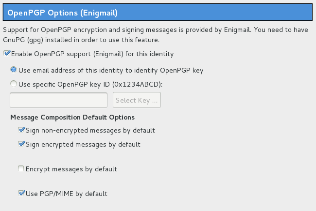

HTML email, attachments, and flowed text in Enigmail
I’ve noticed that a lot of people who are new to GPG really don’t want to give up their HTML email, but the Enigmail setup wizard recommends that you do this.
People have also had weird problems with email attachments when sending signed or encrypted emails. And when you use Enigmail’s default settings and compose your messages in plaintext, Enigmail also turns off “flowed text”, so that lines get wrapped at 72 characters.
Well, none of this is actually a problem if you use PGP/MIME, which is the recommended way of using OpenPGP anyway. You can safely compose messages in HTML, there are no problems with attachments, and if you use plaintext email it’s completely fine to use flowed text. Here’s how to configure Thunderbird to work with PGP/MIME.
Go to Account Settings. In Windows and Linux this is in the Edit menu, in Mac OS X this is in the Tools menu. Go to the OpenPGP Security page (if you have multiple Thunderbird accounts you’ll need to do this for each one).

Make sure that “Use PGP/MIME by default” is checked. While you’re at it, you might want to sign both non-encrypted and encrypted messages by default.
Once you have enabled PGP/MIME, it’s completely safe to use HTML email, attachments don’t have any problems, and it’s also safe to use flowed text for plaintext emails.
If you’d like to turn on HTML email, go to the Composition & Addressing page and make sure “Compose messages in HTML format” is checked. Note: There are valid arguments against HTML email, but it’s not a security problem, and some people hate plaintext email. So it’s fine.
If you do want to use plaintext email, you can enable flowed text by going to Preferences. In Windows and Linux it’s in the Edit menu, in Mac OS X it’s in the Thunderbird menu. From there go to Advanced, then the General tab, and click Config Editor in the bottom right.
When you open it it says “This might void your warranty!”, but you can go ahead and click “I’ll be careful, I promise”. This is the exact same thing as going to about:config in Firefox. Then you can search for “send_plaintext_flowed” and double-click the setting to change the value from false to true. And by the way, you can change all of Thunderbird’s preferences from in here too, including ones that don’t have a GUI for changing, and some of them might break everything, so be careful.


Legacy comments, imported from previous version of this blog:
Alan Eliasen
September 19, 2013 02:45 PM
I've had people ask me why Enigmail stops their ability to send HTML-formatted e-mail, and I noticed, when walking someone else through the Enigmail wizard, that it asks to turn off HTML formatting. This is a good guide to re-enabling it, so thanks. I always just said "If you need HTML, don't let it turn it off in the wizard." Actually, I recommend not using the Enigmail wizard at all, but generating your keys directly in the gpg command-line tool, as some of its options are broader and the implications of your choices stated more correctly.
However, I argue strongly in my GPG guide that PGP/MIME will probably limit your ability to reach many people who (correctly) use GPG, and I recommend against using PGP/MIME. Enigmail's receiving of encrypted attachments and public keys is broken, too, and it often can't even decrypt and import, say, a public key that it attached. (Try sending an encrypted or unencrypted public key to yourself as an Enigmail attachment, and then importing it.)
Enigmail also has a severe security bug that if it encounters a PGP/MIME message, it will automatically and silently try to decrypt it, even if you've told Enigmail not to automatically decrypt messages! This is very bad if someone's looking over your shoulder, and it may make you fail to notice that the message was encrypted at all, so you might forget to encrypt a reply, etc.
For these reasons, I personally recommend against the use of PGP/MIME at the moment, even if both sides use Enigmail, but rather recommend just plain ASCII-armored encrypted text in the body of a plaintext message. It will let you reach more people and reduce the risk of your attachments being unreadable or being stripped out entirely.
Additionally, unpredictability is the key to good encryption practice. For this reason, I recommend strongly against using HTML in encrypted messages, as this gives a long run of "known plaintext". If it's not obvious why known plaintext can be bad, consider this recent disastrous break on the widely-used (albeit not in GPG) RC4 cipher</A> which allows, if you know a small number of bytes of the plaintext, (even as low as 6) to recover the rest of the message, given enough ciphertexts. The more unpredictable your messages are, the harder they will be to break.
This article helps you to still be able to send HTML-formatted messages in your other communications, and for that it is very helpful, but you don't want HTML in your encrypted communications if you want your message to be as unpredictable as possible.
/dev/null
April 22, 2016 04:12 AM
Using HTML-formated email with OpenPGP IS a security problem, HTML prevents OpenGPG from encrypting emails correctly, and leaks attachments filename… if you use encryption, there are high chances than you don't want anyone to spy on you, then you you probably don't want them what kind of documents you're working on, just because the filename leaked…
Micah Lee
April 22, 2016 08:49 AM
This isn't true if you use PGP/MIME, like the post suggests. Turn on PGP/MIME and send yourself an encrypted email with attachments, and then view the source. You'll see there's just one big block of PGP ENCRYPTED MESSAGE, with no filenames or anything else leaking. If you don't use PGP/MIME, however, then you do leak filenames of attachments. Leaking of filenames doesn't have anything to do with HTML email, it has to do with PGP/MIME vs Inline PGP.
Jesse
December 27, 2013 02:41 AM
Thanks, that was super helpful!
David
June 26, 2016 07:47 AM
I use thunderbird with enigmail, I've read warnings that you shouldn't use attachments and should stay well away? I don't know whether to use Inline PGP or PGP/MIME. Any help?
Randall
February 6, 2014 01:17 PM
Hey man, thank you for publishing this info. Very helpful!
Good job!